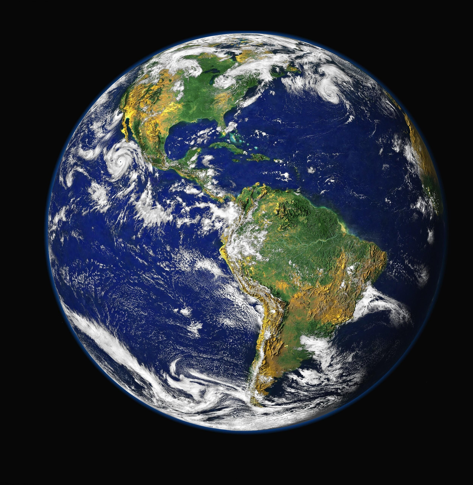
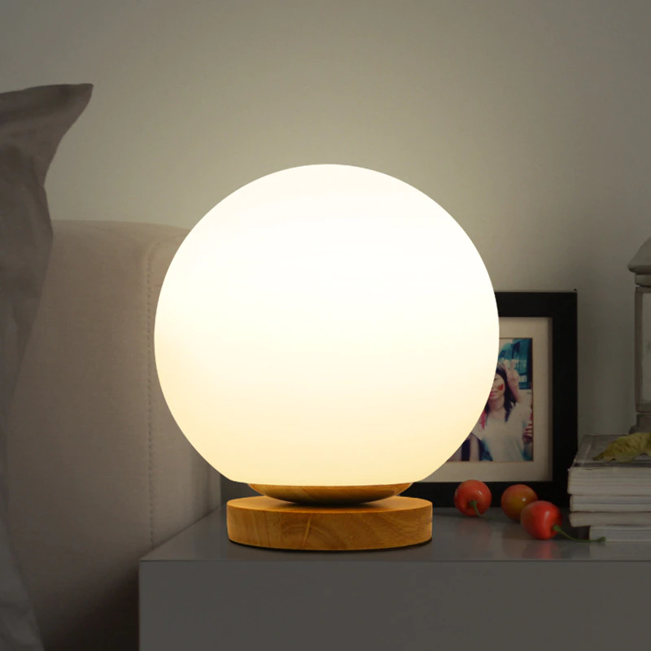
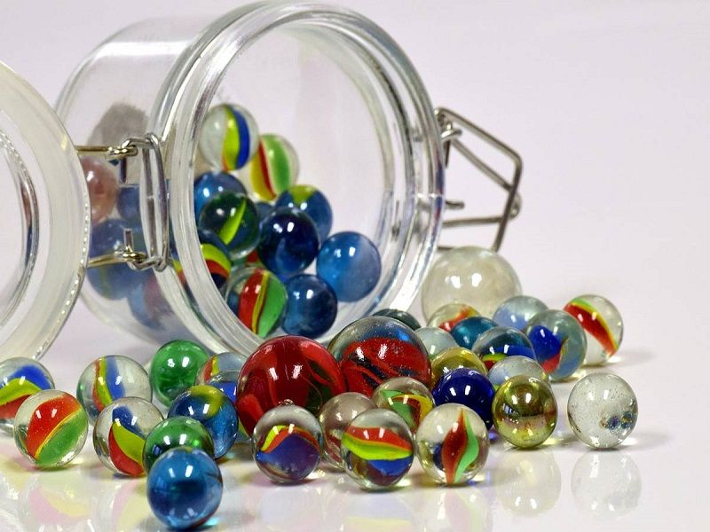
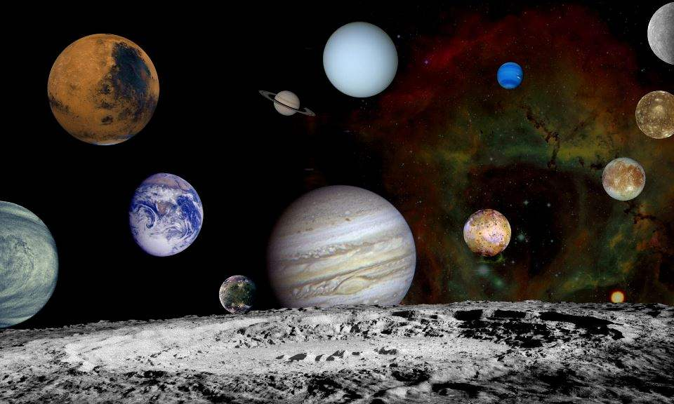
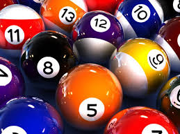
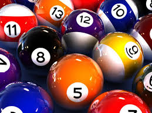

Surface Area and Volume of a Sphere
Please enter the length of the radius of the sphere below:

Use the slider below to indicate how many examples of
spheres you can think of in your day-to-day life:
Here are a few. Recognize any?
 
